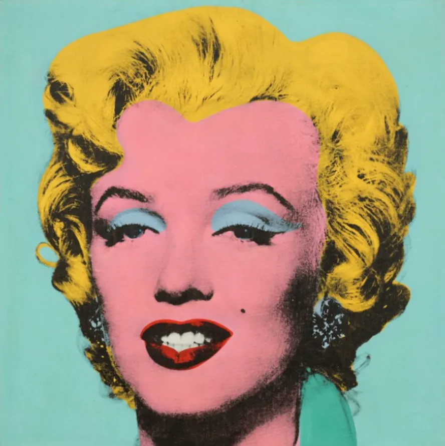

A Pop Art é um movimento artístico que surgiu no século XX e se inspira na cultura popular. Ela utiliza imagens de propagandas, quadrinhos e celebridades para criar obras coloridas e marcantes.

Marilyn Monroe
Andy Warhol
Uma das obras mais famosas da Pop Art, apresenta a atriz Marilyn Monroe em cores vibrantes, repetindo sua imagem como em uma produção em massa.
Whaam!
Roy Lichtenstein
Inspirada em histórias em quadrinhos, essa obra utiliza cores fortes e pontos para simular impressão gráfica, característica da Pop Art.